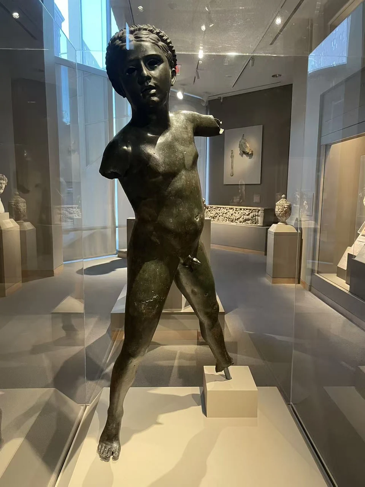
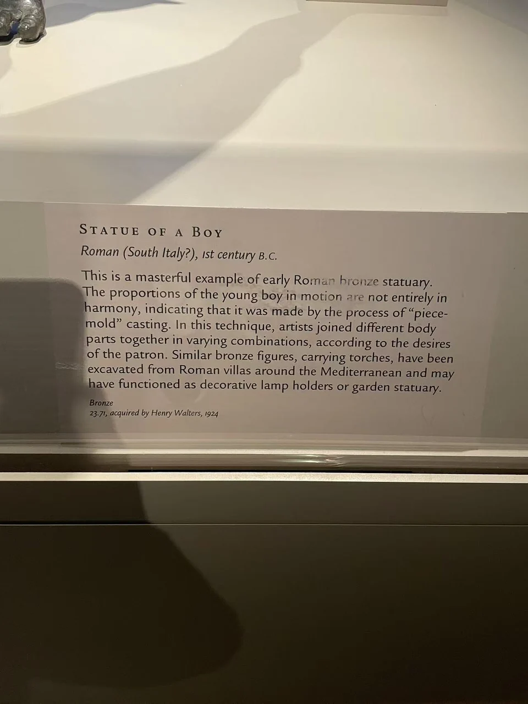

BRONZE / B17
少年像
少年向前伸出双臂，动作像是在承托什么。原来的器物已经不在，身体却仍保留服务于陈设的可能。

- 年代
- 公元1世纪（当前官网）；现场展牌写公元前1世纪
- 材料
- 青铜
- 形制
- 人物像／可能的陈设器物
- 尺寸
- 115.5 × 54.6 × 22.8厘米
- 收藏与观看
- 沃尔特斯艺术博物馆 · 巴尔的摩
- 馆藏号
- 23.71
雕像也可以参与日常使用
沃尔特斯馆方把这件作品与别墅、庭园中的类似少年像比较，提出灯具支架或装饰陈设的可能。它由不同部件连接而成，比例并不完全统一；具体原用途仍未确定。 [27]
馆方现行目录定为公元1世纪，而现场展签写公元前1世纪。两份资料都保留在这里。递藏记录列亨利·沃尔特斯于1924年从Dikran Kelekian购入，1931年遗赠入馆。 [27]
伸出的手，也可能原来托着一盏灯。
现场展签与背景说明

资料与来源
断代、归属与收藏资料
官网与现场展签为何采用不同年代，目前未见说明。不能由其在意大利藏家的旧藏经历，反推确定的古代发现地点。 [27]
基本资料亦参见本页现场展签；照片中的细节与馆方解释分别叙述。